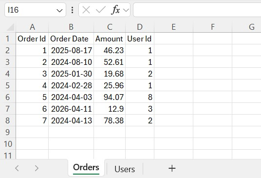
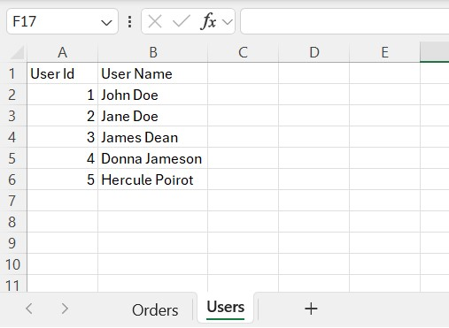
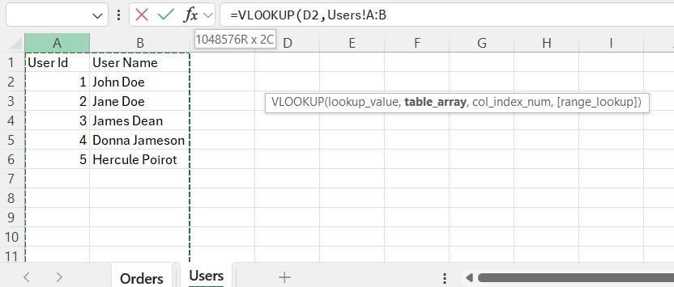
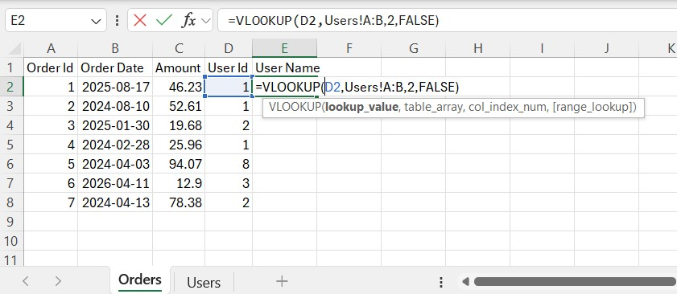
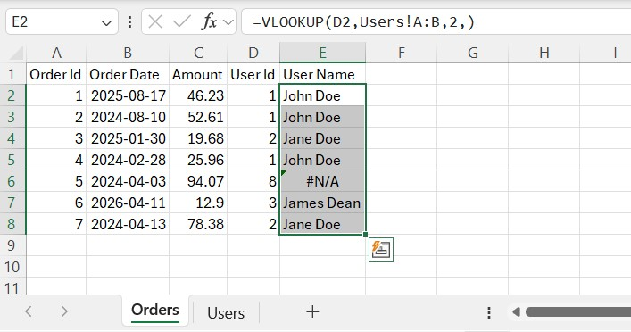

VLOOKUP in Excel: syntax, examples and common errors
How VLOOKUP works, a worked example with orders and users, why it returns #N/A, and what to use instead.
A typical situation: one sheet has orders with a user id, another has a list of users, and you want the user name next to each order. Copying names by hand does not scale. VLOOKUP (in Russian Excel, ВПР) does this: it takes a key, finds it in the first column of a table and returns a value from the same row.
Syntax
=VLOOKUP(lookup_value, table_array, col_index_num, [range_lookup])
lookup_value– what to find, for example the user id in the current row.table_array– where to look. The key must be in the first column of this range.col_index_num– which column of the range to return, counting from 1.range_lookup–FALSE(or0) for an exact match,TRUEfor an approximate one. If omitted, Excel usesTRUE, which is rarely what you want for ids and names.
An example
The Orders sheet has the order id, date, amount and user id:

The Users sheet has the reference list:

In cell E2 of the Orders sheet start the formula. After typing the first argument, switch to the Users sheet and select the columns A:B; Excel fills in the second argument:

=VLOOKUP(D2, Users!A:B, 2, FALSE)

Here the key is in D2, the table is Users!A:B, and we return the second column (the name). Copy the formula down:

The order with user id 8 shows #N/A: there is no such id in the Users sheet. This is the correct behaviour. It tells you the data does not match, which is often exactly what you are looking for.
Why you get #N/A (or a wrong value)
- The key is really missing. Check the reference list.
- Text versus number. The id
1as a number does not match"1"as text. See converting text numbers to numeric values. - Extra spaces.
"John "is not"John". See removing extra spaces. - The key column is not first. VLOOKUP only looks to the right of the first column of
table_array. - Approximate match. Without
FALSEExcel assumes the first column is sorted and can quietly return a wrong row. Always write the last argument. - Hard-coded column number. If someone inserts a column in the lookup table,
2now points at the wrong one. Check formulas after changing the table structure. - A moving range. When you copy the formula,
A2:B6shifts too. Use whole columns (A:B) or lock the range ($A$2:$B$6).
Alternatives
XLOOKUP (Excel 2021 and Microsoft 365) removes most of these limits: exact match by default, no column number, can look to the left, and has a built-in "not found" value.
=XLOOKUP(D2, Users!A:A, Users!B:B, "not found")
INDEX and MATCH work in every version and also look in any direction:
=INDEX(Users!B:B, MATCH(D2, Users!A:A, 0))
If the lookup list is a table (see cleaning data), you can refer to its columns by name, and the range grows when you add rows.
A formula like IFERROR(VLOOKUP(...), "") hides the errors, including real data problems. Use it only after you have checked why the values are missing.
More on formulas in general: Beginner's guide to Excel formulas.